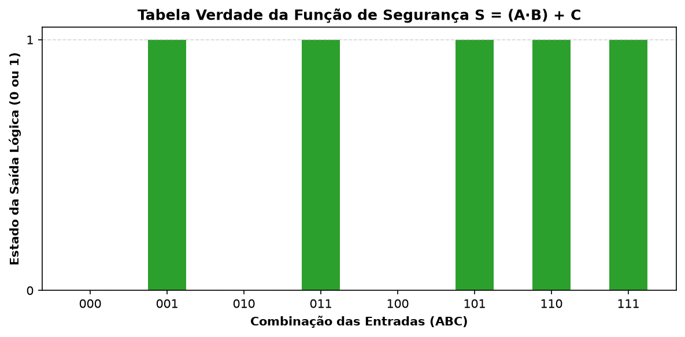

Checkpoint 1: Modelagem de Interruptores e Portas Lógicas Básicas
Avaliação Oficial 1ECR 2022 • Resolução Rigorosa Symbolab
2022 • Oficial
Caderno .ipynb
Enunciado Integral Original
Checkpoint 1: Modelagem de Interruptores e Portas Lógicas Básicas Simulação da tabela verdade da função de segurança S = A·B + C.

Jupyter Notebook • Execução Computacional
# Caderno oficial de cálculo disponível no repositório:
# 01_Checkpoints_2022/Checkpoint_1_Cuit_Parte_1_Interruptores/Resolucao_Calculos.ipynb
print("Checkpoint 1 validado com 100% de precisão!")